Midnight Hackings apoia o fim da escala 6x1.
Todos nós trabalhadores devemos ter direito à vida além do trabalho! Trabalhadores unidos mudam o mundo.
ARM64: Hello World! - Parte 1
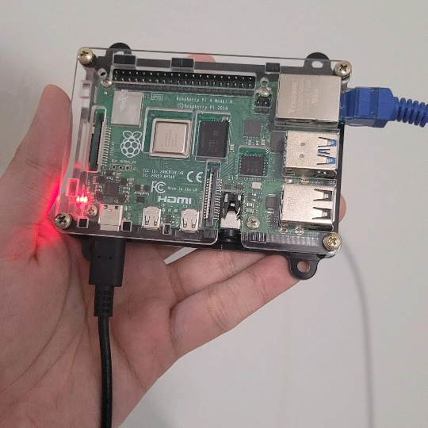
Introdução
Esse artigo tratará dos primeiros passos para realizar engenharia reversa em softwares escritos para a arquitetura ARMv8 (64-bits). Para esse objetivo, primeiramente precisamos entender o que é ARM, suas características principais, como executar, entre outros conceitos básicos. Após isso, serão descritos passos para a configuração de um ambiente próprio para executar instruções e programas produzidos para a plataforma Linux/ARM64.
O que é ARM? Por que estudar essa arquitetura em específico?
ARM, um acrônimo para Advanced RISC Machine, é uma arquitetura de computadores bastante utilizada em dispositivos móveis, IoT (incluíndo roteadores e dispositivos inteligentes), placas Raspberry Pi e até laptops, como os novos Macbooks. Versões de 32-bits da arquitetura geralmente são chamados de ARMv7 ou apenas ARM, enquanto que as versões de 64-bits são chamados de ARMv8, A64, ARM64 ou AARCH64. Nesse artigo, ARM será tratado como AARCH64, a não ser quando explicitamente avisado.
Ser RISC (Reduced Instruction Set Computer) significa ter um conjunto de instruções reduzido, mais simples em comparação com arquiteturas CISC (Complex Instruction Set Computer), como x86 ou amd64. Entretanto, essa “desvantagem” permite que a arquitetura necessite de menos energia para funcionar, permitindo seu uso em dispositivos embarcados e de limitação de processamento.
Abaixo estão algumas informações importantes sobre a arquitetura:
- Contém 31 registradores de propósito geral, de 64-bits, referidos como de x0…x30 (ou r0…r30)
- São acessíveis em suas versões 32-bits via notação w0…w30
- As instruções geralmente utilizam a notação
mnemônico DEST, SOURCEoumnemônico DEST, SRC1, SRC2 - As instruções têm tamanho fixo, de 4 bytes
- Diferentemente da x86/amd64, é baseada em load/store, ou seja, há uma divisão das instruções em instruções que fazem acesso à memória e as que realizam operações da ALU. Na prática, isso significa que não é possível realizar um ADD, SUB ou quaisquer outras operações utilizando operandos da memória, necessitando de instruções load para carregar antes os valores da memória em um registrador e após um store para armazenar o resultado na memória.
Na imagem abaixo, extraída de Getting Started with Arm Assembly Language, estão descritos alguns dos usos principais dos registradores de propósito geral.
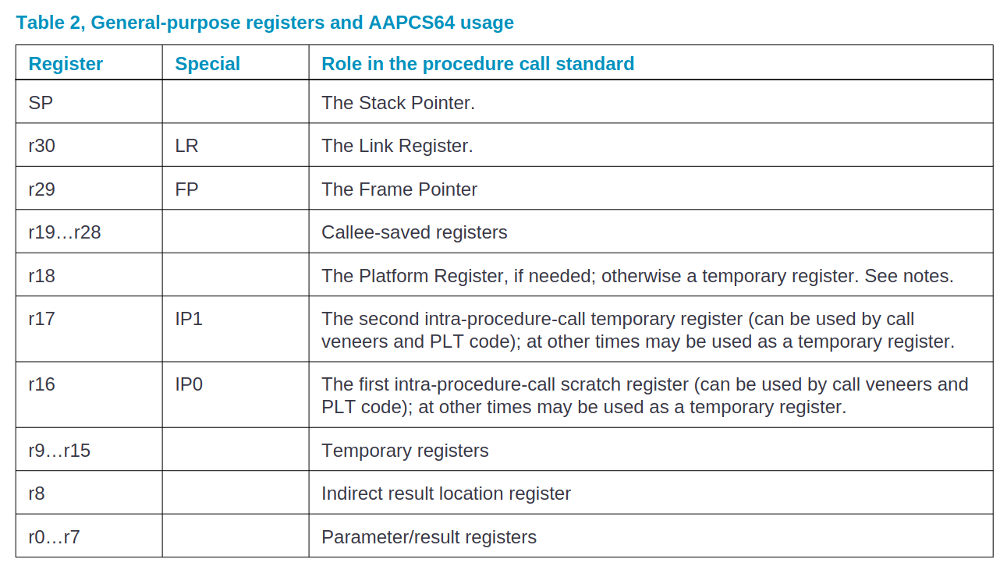
Especialmente para o profissional da área de análise de malware, o estudo e o domínio de conhecimento da ARM, tanto em 32-bits quanto 64-bits, é algo necessário. Um grande número de smartphones rodam na plataforma Android ou iOS sobre ARM, e a cada dia mais novos malwares são disponibilizados (inclusive nas lojas oficiais!) para download. A análise de tais artefatos pode necessitar, além da análise do código-fonte, uma análise mais profunda a nível de código de máquina, exigindo do analista um conhecimento sobre a arquitetura.
Tal necessidade de aprendizado também é necessário para um pesquisador de vulnerabilidades. Em um mundo conectado via roteadores e dispositivos embarcados/IoT, esses proveem uma ampla gama de máquinas que podem conter sérias vulnerabilidades, como Denial of Service (DoS) e até Remote Code Execution (RCE).
Para rodar instruções ARM no contexto do uso de um sistema operacional, é necessário criar um programa em um formato específico que o loader, um software especial que permite criar processos, consiga entender - ou seja, um executável. Para isso, é necessário seguir os passos:
- criação do programa principal em assembly (source.S);
- utilização de um software assembler (as) para gerar o arquivo-objeto (source.o);
- utilização de um software linker (ld) para gerar o executável final (source).
Na imagem abaixo está representado esse procedimento:
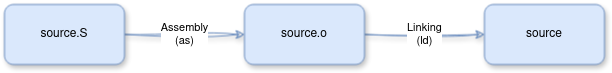
Na próxima seção será abordado a forma de executar código ARM em diversos contextos.
Formas de rodar ARM
Há diversas formas de rodar instruções ARM, inclusive via web, como o site CPUlator (apenas 32-bits). Aqui serão apresentadas duas formas: para quem já tem uma máquina AARCH64 e para quem não possui.
Em todos os casos os seguintes pacotes deverão constar no sistema:
- binutils é o pacote que conterá o GNU Assembler (as) e o linker (ld);
- vim é um editor de texto que será utilizado para escrever o código-fonte. Porém, a escolha de qualquer outro editor é possível e fica a cargo do leitor.
Em uma máquina AARCH64
Se o leitor já possui uma máquina AARCH64, como um Raspberry Pi (versões mais recentes, como o 4) ou Macbooks mais recentes, não são necessárias ações adicionais de emulação do sistema. Apenas é recomendado a instalação de uma máquina virtual Linux, caso seu host não seja uma distro GNU/Linux, para prosseguir com a instalação dos seguintes pacotes:
sudo apt update -y
sudo apt install vim binutils
No caso do Raspberry Pi OS, não é necessário instalar uma máquina virtual, apenas rodar os comandos acima.
Em máquinas não compatíveis
Para máquinas Desktop atuais, com sistemas x86/amd64, o procedimento fica um pouco mais complicado, visto que esses computadores não entendem as instruções ARM nativamente. Nesse caso, o usuário têm duas opções a princípio: emular a plataforma ou criar uma instância na nuvem.
Abaixo estão os procedimentos para cada uma dessas abordagens.
Emulação de AARCH64 via QEMU
Nesse caso, será necessário o uso de um emulador, como o QEMU e uma imagem Linux, como o Raspberry Pi OS. Essa imagem já vêm preinstalada, mas é necessário fazer algumas alterações para acesso à rede e ao SD Card virtual. É possível seguir o tutorial disponível no blog Interrupt.
Para facilitar essa configuração (bem técnica e complicada), utilizaremos a imagem Docker citada no artigo. Para isso, seu sistema deve ter o Docker instalado, clique aqui para ver o tutorial oficial de instalação no Ubuntu. Em seguida, realize um pull na imagem e crie o container com os seguintes comandos:
sudo docker pull docker pull stawiski/qemu-raspberrypi-3b:2023-05-03-raspios-bullseye-arm64
sudo docker run -it --rm -p 2222:2222 stawiski/qemu-raspberrypi-3b:2023-05-03-raspios-bullseye-arm64
O output esperado é semelhante ao das imagens abaixo:
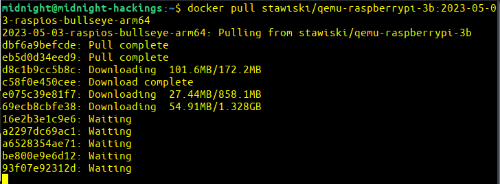
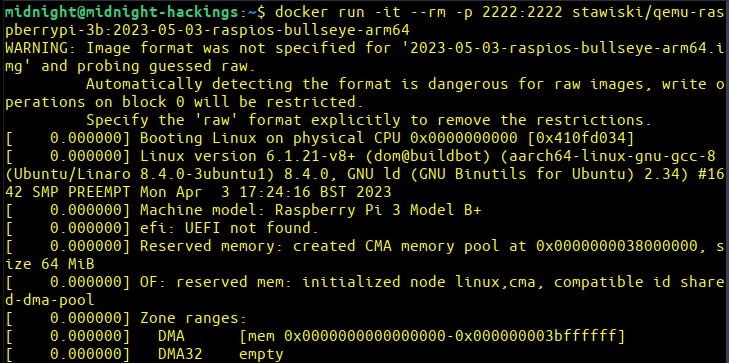
Após o sistema carregar completamente, em outro terminal no seu host realize o login em localhost:2222 via SSH, conforme imagem abaixo. O usuário é pi e a senha é raspberry:
ssh -p 2222 pi@localhost
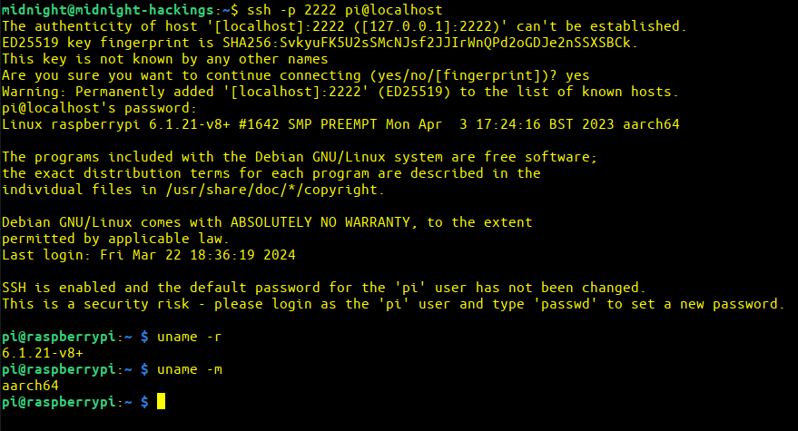
Essa imagem já contém os utilitários do binutils instalados, não necessitando de pós instalação. Caso o leitor queira instalar um editor de texto, como o vim, deve seguir os seguintes passos:
sudo apt update -y
sudo apt install vim
AWS
Essa abordagem não irá gerar lentidão de processamento, mas necessita de investimento monetário. É possível subir uma máquina Linux/AARCH64 em alguns cliques na AWS.
Para isso, realize login na AWS e acesse a EC2 Dashboard e clique em “Launch Instance”:
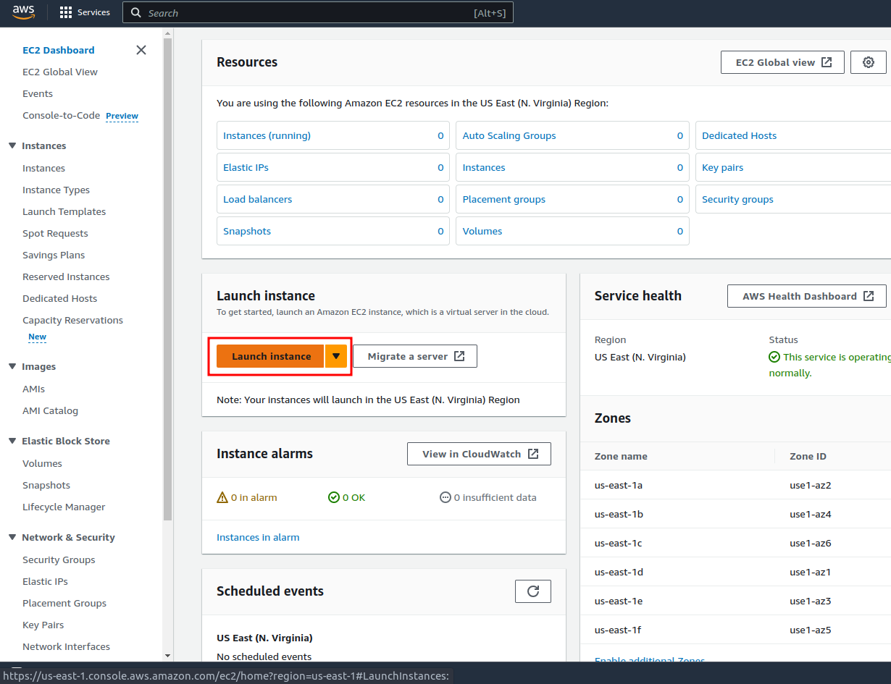
Dê um nome para a máquina, como “ubuntu-arm64”, selecione a AMI “Ubuntu” e selecione a arquitetura “64-bit (ARM)”:
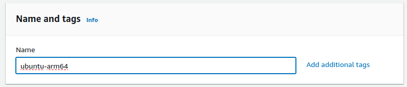
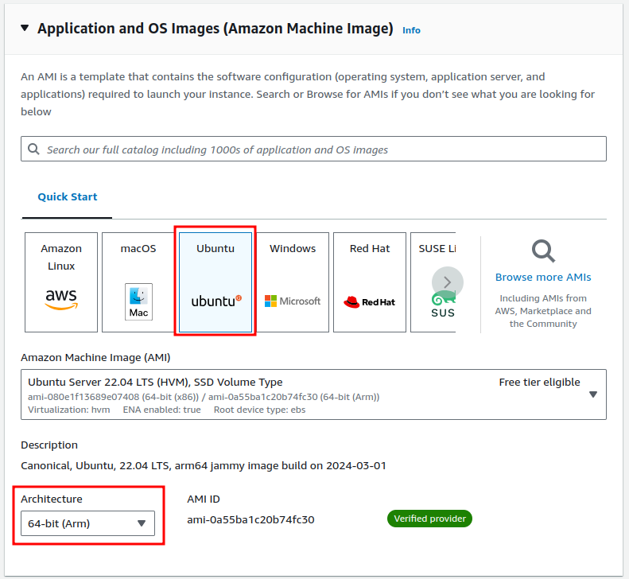
No campo “Instance Type”, selecione o tamanho requerido pela aplicação que deseja rodar e que caiba no seu investimento. No caso desse artigo, o tipo de menor preço (t4g.nano) já é suficiente. Adicione também uma chave de acesso - ela será utilizada para realizar login via SSH na máquina criada.
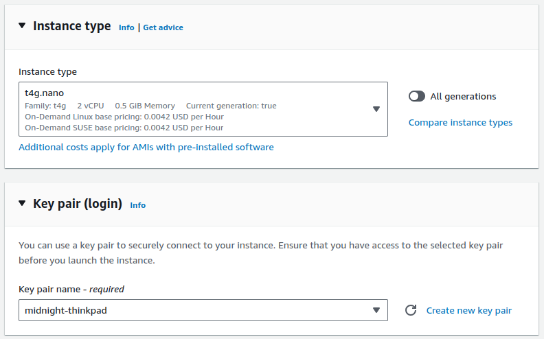
Adicione um storage de pelo menos 8GB para abrigar o sistema operacional e os dados.
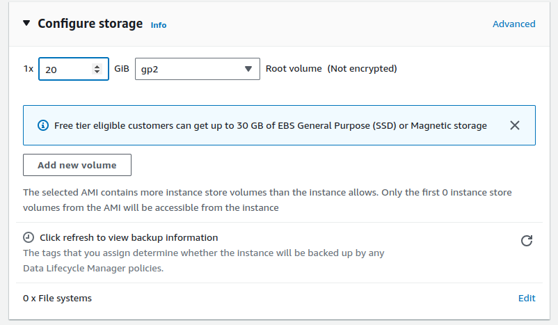
Ao fim, clique em “Launch instance” e aguarde a inicialização total da máquina.
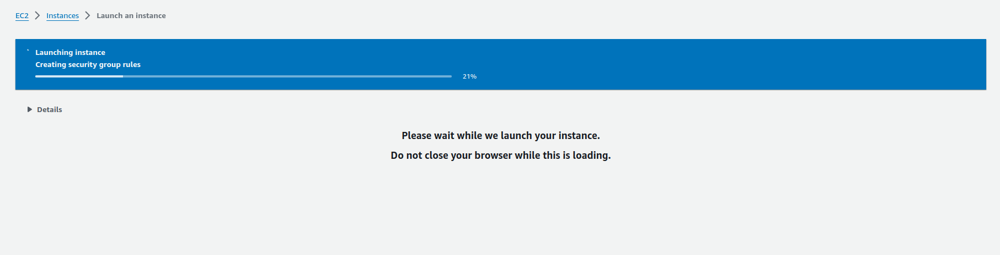
Clique no ID da instância apresentado na tela e copie o endereço IPv4 público:
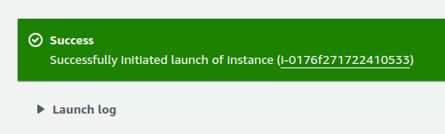
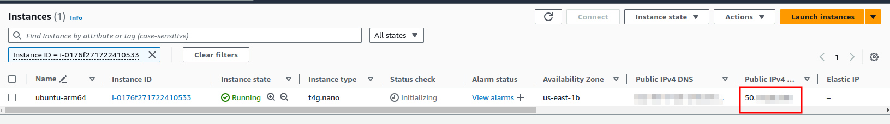
Após isso, é possível logar na máquina usando a chave .pem baixada, mas antes é necessário utilizar o comando chmod 700 <chave>.pem para diminuir suas permissões e permitir que o SSH realize a conexão com sucesso via ssh ubuntu@<IPv4 público> -i <chave>.pem:
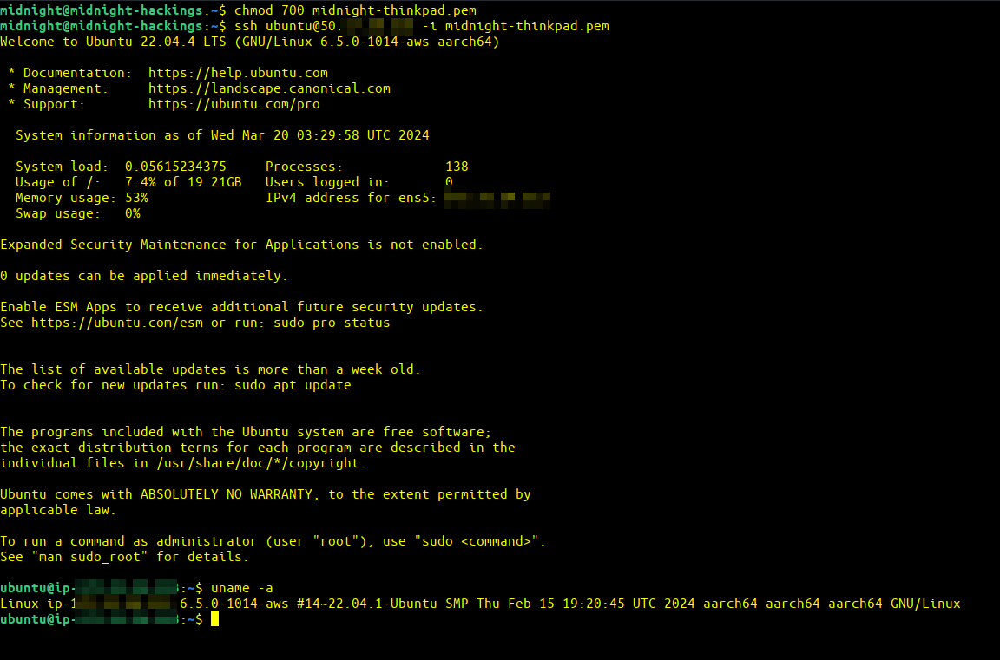
Por fim, realize a instalação do binutils e um editor de texto com o comando:
sudo apt update -y
sudo apt install vim binutils
Conclusão
Nesse artigo foram explicados conceitos básicos da arquitetura ARM os passos para a criação de um ambiente mínimo para a execução de instruções em máquinas nativas e em máquinas não compatíveis. No próximo artigo será mostrado a construção de um primeiro programa, um “Hello World” em ARM64.